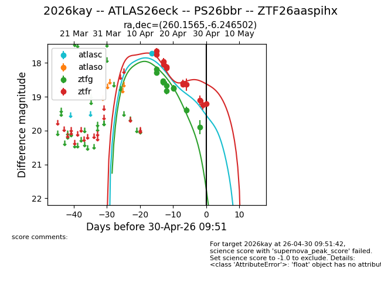
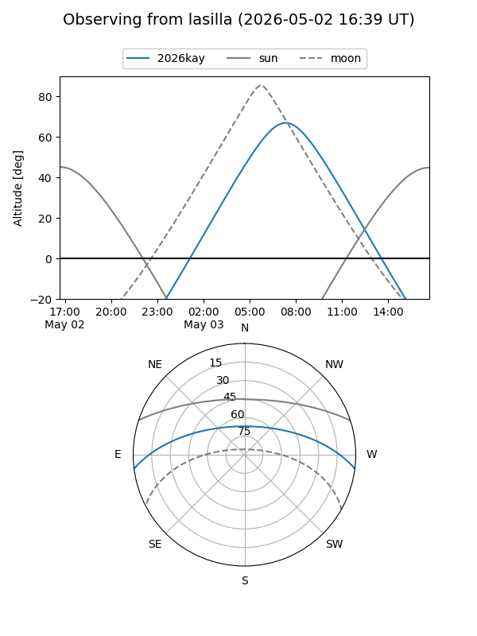
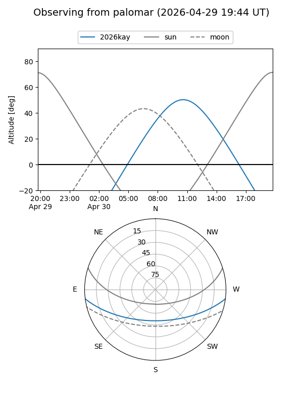
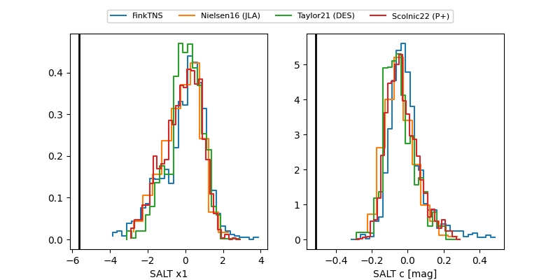

2026kay
Target 2026kay at 2026-04-30 09:56
Aliases and brokers:
FINK: link
Lasair: link
ALeRCE: link
TNS: link
YSE: link
alt names
ZTF26aaspihx (ztf,fink_ztf)
2026kay (tns,yse)
ATLAS26eck (atlas)
PS26bbr (panstarrs)
Coordinates:
equatorial (ra, dec) = 260.1565,-6.24650
equatorial (HMS+DMS) = 17:20:37.57,-06:14:47.41
galactic (l, b) = (16.4239,+16.96819)
Flags:
Photometry:
last atlasc=17.73, ztfg=19.90, ztfr=19.20
1 atlasc, 10 ztfg, 12 ztfr detections
Lightcurve

Visibility


Additional plots
